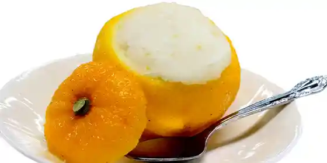
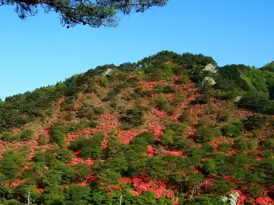

Kuji Kawa no Ayu
Yamatsuri, Fukushima · 0247-46-4575 · Official / source link
Miryoku Manten Monogatari Yamatsuri Mise (Taro no Shiki)
Yamatsuri, Fukushima · 0247-46-2405 · Official / source link
Yuzu Shabetto
Yamatsuri, Fukushima · 0247-46-4300 · Official / source link

Higashikan Onsen Yuparu Ya Festival
Yamatsuri, Fukushima · 0247-46-4300 · Official / source link
Yamatsuri Yama Park
Yamatsuri, Fukushima · 0247-46-4575 · Official / source link

Yazawa Shuzo Mise
Yamatsuri, Fukushima · 0247-46-3101 · Official / source link
Takikawa Keikoku Nosambutsu Chokubai Tokoro (Takikawa Village)
Yamatsuri, Fukushima · 0247-47-2260 · Official / source link
Takikawa Gorge
Yamatsuri, Fukushima · 0247-46-4575 · Official / source link
Yamatsuri Sanyu Jo Forest
Yamatsuri, Fukushima · 0247-46-4575 · Official / source link
Ayu no Suspension Bridge
Yamatsuri, Fukushima · 0247-46-4575 · Official / source link
Totsu Hen Cherry Blossoms
Yamatsuri, Fukushima · 0247-46-4575 · Official / source link
Yamatsuri Shrine
Yamatsuri, Fukushima · 0247-46-4575 · Official / source link
Shirasaka Suekichi no Haka
Yamatsuri, Fukushima · 0247-46-2202 · Official / source link
Saigyo no Kahi
Yamatsuri, Fukushima · 0247-46-2202 · Official / source link
Totsuka Seikan Oto Do
Yamatsuri, Fukushima · 0247-46-2202 · Official / source link
Kumano Jinja Ishi no O Miya
Yamatsuri, Fukushima · 0247-46-2202 · Official / source link